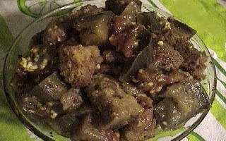

EGGPLANT CASSEROLE
- 7 CUPS EGGPLANT (ANY VARIETIES) - CUT INTO 2 INCH CHUNKS
- 2 1/2 CUPS TOMATOES - PEELED AND COARSELY CHOPPED
- 1 CUP ONION - COARSELY CHOPPED
- 10 MEDIUM CLOVES GARLIC - MINCED
- 1 1/2 TBS. DRIED OREGANO
- 2 tsp. DRIED BASIL
- 2 tsp. DRIED PARSLEY
- 1 PINCH CAYENNE POWDER
- 3 TBS. OLIVE OIL
- SALT TO TASTE
- 2 CUPS ITALIAN SEASONED CROUTONS (TO BE ADDED LAST)
PREHEAT THE OVEN TO 375 DEGREES. PLACE ALL INGREDIENTS EXCEPT CROUTONS IN A LARGE BOWL. MIX WELL AND POUR INTO A LARGE BAKING DISH AND COVER. BAKE FOR 45 MINUTES, STIRRING OCCASIONALLY. REMOVE CASSEROLE FROM OVEN, AND TOP WITH CROUTONS. PAT THE CROUTONS DOWN LIGHTLY, AND BAKE UNCOVERED FOR ANOTHER 15 MINUTES. REMOVE CASSEROLE FROM OVEN AND ALLOW TO COOL ABOUT 10 MINUTES BEFORE SERVING.
NOTE: CHOOSE SMALL, ORGANICALLY GROWN EGGPLANT OF ANY VARIETY, AS THE FLAVORS AND NUTRITIONAL CONTENT ARE SUPERIOR AND THERE WILL BE NO NEED TO PEEL THE TENDER SKINS.
MAKES APPROX. 6 SIDE SERVINGS.